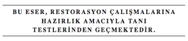

40
Vites koluyla mücadele eden Langdon arabayı sadece iki kez stop ettirerek kaçırdıkları taksiyi Bois de Boulogne’nin sonuna kadar götürmeyi başardı. Ne yazık ki, durumun komikliği, telsizle sürekli şoförlerini arayan taksi şirketinin sesiyle gölgeleniyordu.
“Araç beş-altı-üç. Neredesin? Yanıt ver!”
Langdon parkın çıkışına ulaştığında gururunu ayaklar altına alarak frenlere asıldı. “Sen kullansan daha iyi olur.”
Sophie direksiyona geçtiğinde rahatlamışa benziyordu. Birkaç saniye içinde, Dünyevi Zevkler Bahçesi’ni geride bırakarak, arabayı Allée de Longchamp’dan batıya doğru sürmeye başlamıştı.
Langdon, Sophie’nin hız ibresini saatte yüz kilometreye çıkarmasını seyrederken, “Rue Haxo hangi yönde?” diye sordu.
Sophie gözlerini yoldan ayırmıyordu. “Taksi şoförü Roland Garros Tenis Stadyumu’na yakın olduğunu söylemişti. O bölgeyi biliyorum.”
Langdon bir kez daha ağır anahtarı cebinden çıkardı ve avucunda tarttı. Çok önemli bir nesne olduğunu hissedebiliyordu. Belki de kendi özgürlüğü bile bu anahtara bağlıydı.
Langdon, Sophie’ye Tapınak Şövalyeleri’nden bahsederken, bu anahtarın üstünde tarikat mührünü taşımasının yanı sıra, Sion Tarikatı’yla daha derin bağa sahip olduğunu fark etmişti. Eşit kollu haç denge ve uyum sembolüydü ama aynı zamanda Tapınak Şövalyeleri’ni simgeliyordu. Üzerine eşit kollu kırmızı haçlar işlenmiş beyaz tunikli Tapınak Şövalyeleri resimlerini herkes görmüştü. Aslında Tapınakçılar’ın haçının kolları uçlarda biraz genişliyordu ama yine de eşit uzunluktaydılar.
Kare haç. Tıpkı bu anahtarın üstünde olduğu gibi.
Langdon ne bulacaklarını tahmin etmeye çalışırken hayal gücünün çılgına döndüğünü hissetti. Kutsal Kâse. Neredeyse bunun saçmalığına kahkahalarla gülecekti. Kâse’nin İngiltere’de bir yerlerde olduğuna ve en azından 1500 senesinden beri, Tapınakçılar’a ait pek çok kiliseden birinin altındaki odada gömülü olduğuna inanılıyordu.
Büyük Usta Da Vinci’nin dönemi.
Tarikat önemli belgelerini güven içinde saklamak için önceki yüzyıllarda pek çok kez yerlerini değiştirmek zorunda kalmıştı. Tarihçiler, Kudüs’ten Avrupa’ya geldiğinden beri Kâse’nin altı kez yer değiştirdiğini düşünüyorlardı. Kâse son olarak 1447 yılında görülmüştü. Sayısız tanık, bir yangın çıktığını ve belgelerin, her birini ancak altı adamın taşıyabildiği dört dev sandığa yüklenerek yanmaktan son anda kurtarıldığını anlatmıştı. Bunun ardından bir daha Kâse’yi gördüğünü iddia eden biri çıkmamıştı. Artık sadece belgelerin Büyük Britanya’da, Kral Arthur’un ve Yuvarlak Masa Şövalyeleri’nin topraklarında olduğu fısıldanıyordu.
Her nerede olursa olsun, iki temel gerçek vardı:
Leonardo yaşarken Kâse’nin nerede olduğunu biliyordu.
Saklandığı bu yer, günümüze kadar muhtemelen değişmemişti.
İşte bu yüzden, Kâse tutkunları hâlâ Kâse’nin yerini açığa çıkaran gizli bir ipucuna rastlayabilmek için, Da Vinci’nin eserleriyle günlüklerini derinlemesine inceliyorlardı. Kimileri, Kayalıklar Bakiresi’ndeki dağlık arka planın, İskoçya’daki mağaralarla dolu dağların topografyasıyla uyuştuğunu iddia ediyordu. Kimileri ise Son Akşam Yemeği’ndeki havarilerin şüpheli oturuş düzeninin bir çeşit şifre olduğu konusunda ısrar ediyordu. Bazıları ise Mona Lisa’nın röntgen filmlerinden, aslında İsis’in lapislazuli taşlı küpesini takarken resmedildiğinin anlaşıldığını iddia ediyordu... Da Vinci daha sonra bu ayrıntının üstünü boyamaya karar vermişti. Langdon küpenin var olduğuna dair hiçbir ispata rastlamamış, öyle olsa bile Kutsal Kâse ile bağlantısını anlayamamıştı, ama Kâse meraklıları hâlâ internetteki ilan panolarında ve sohbet odalarında bıkıp usanmadan bu konuyu tartışıyorlardı.
Sırlara herkes bayılır.
Ve sırlar devam ediyordu. Bunlardan en yenisi elbette, Da Vinci’nin ünlü Adoration of the Magi’sinin29 boya katmanlarının altında korkunç bir gerçek sakladığının keşfedilmesiydi. İtalyan sanat uzmanı Maurizio Seracini, New York Times Magazine’in “Leonardo Sahteciliği” başlığıyla anlattığı hikâyeyi ortaya çıkaran kişi olmuştu.
Seracini, şüpheye hiç mahal bırakmadan, resimdeki gri-yeşil fonun gerçekten Da Vinci’nin çalışması olduğunu ama resmin ona ait olmadığını ortaya koymuştu. Gerçek şuydu ki, ismi bilinmeyen bir ressam, Da Vinci’nin ölümünden yıllar sonra onun eskizlerinin üzerinden geçerek resmi doldurmuştu. Ama sahtekârın yaptığı resmin altındaki şey çok daha rahatsızlık vericiydi. Kızılötesi reflektografi makineleri ile çekilen fotoğraflar ve röntgen filmleri, bu hilekâr ressamın, Da Vinci’nin eskiz çalışmasını doldururken, altta kalan resimden şüphe çekecek farklılıklar çizdiğini gösteriyordu... sanki Da Vinci’nin asıl niyetini gizlemeye çalışmıştı. Resmin altında her ne varsa, halkın bilmeye hakkı vardı. Ama Floransa’daki Uffizi Galeri yetkilileri durumdan mahcubiyet duyarak, resmi derhal sokağın karşısındaki bir depoya göndermişlerdi. Galerinin Leonardo salonuna giren ziyaretçiler, bir zamanlar Tapınma’nın bulunduğu yerde yanıltıcı ve özür içermeyen madeni bir levha buluyorlardı.

Çağdaş Kâse avcılarının garip yeraltı dünyasında, Leonardo da Vinci hâlâ en büyük muammaydı. Onun eserleri bir sırrı açıklayacak gibi görünüyordu ve belki bir kat boyanın altında, belki açık bir manzarada şifrelenmiş bir halde veya belki de hiçbir yerde, hâlâ saklı duruyordu. Da Vinci’nin boş ümitler uyandıran ipuçları, meraklıları hayal kırıklığına uğratmak ve bilmiş Mona Lisa’nın yüzüne halinden memnun bir gülümseme oturtmaktan başka bir amaç gütmüyor olabilirdi.
Sophie, Langdon’ı düşüncelerinden ayırarak, “Elinde tuttuğun anahtarın,” diye sordu. “Kutsal Kâse’nin saklı olduğu yeri açması mümkün mü?”
Langdon zorlama bir kahkaha attığının kendisi bile farkına varmıştı. “Gerçekten hiç sanmıyorum. Ayrıca Kâse’nin İngiltere’de saklı olduğuna inanılıyor, Fransa’da değil.” Sophie’ye hikâyeyi kısaca anlattı.
Sophie, “Ama tek mantıklı cevap Kâse’ymiş gibi geliyor,” diye ısrar etti. “Elimizde tarikat mührünü taşıyan son derece gizli bir anahtar var, ayrıca bize Sion Tarikatı üyelerinden biri tarafından iletildi... ki, sen bana onların Kutsal Kâse muhafızları olduğunu söylemiştin.”
Langdon, onun iddiasının mantıklı olduğunu kabul ediyordu ama sezgileri bunu kabul edemeyeceğini söylüyordu. Tarikatın Kâse’yi bir gün nihai dinlenme yeri olarak Fransa’ya getireceklerine dair yemin ettiklerini anlatan söylentiler vardı ama bunun olduğuna dair hiçbir tarihi kanıt bulunmamıştı. Tarikat Kâse’yi Fransa’ya getirmiş olsa bile, tenis stadyumunun yanındaki 24 Rue Haxo adresi pek de soylu bir nihai dinlenme yerine benzemiyordu. “Sophie, bu anahtarın Kutsal Kâse’yle nasıl bir ilişkisi olabileceğini gerçekten kestiremiyorum.”
“Çünkü Kâse İngiltere’de olmalı, öyle değil mi?”
“Sadece bu değil. Kutsal Kâse’nin yeri tarih boyunca en iyi saklanan sırlardan biridir. Tarikat üyeleri kardeşliğin üst kademelerine ulaşmadan önce güvenilir olduklarını kanıtlayıp, Kâse’nin bulunduğu yeri öğrenmek için yıllarca beklerler. Bu sır, bölümlere ayrılmış karmaşık bir sistemle korunur ve tarikat kardeşliği oldukça geniş olduğu halde, herhangi bir zamanda yalnızda dört üye Kâse’nin nerede olduğunu bilir... Büyük Üstat ile onun üç sénéchaux’u. Büyükbabanın en yukarıdaki bu dört kişiden biri olma ihtimali oldukça zayıf.”
Gaz pedalına iyice basarken Sophie, büyükbabam onlardan biriydi, diye düşündü. Büyükbabasının kardeşlikteki konumunu şüpheye hiç yer bırakmayacak şekilde teyit eden bir görüntü hafızasına kazınmıştı.
“Büyükbaban üst kademelerde olsa bile, kardeşlik dışından hiç kimseye hiçbir şey açıklamasına izni olmazdı. Seni iç çembere alması olanaksız.”
Bodrumdaki ayini gözlerinde canlandıran Sophie, ben oraya girdim bile, diye düşündü. Normandiya’daki şatoda o gece şahit olduklarını Langdon’a anlatmanın vakti gelip gelmediğini düşündü. Duyduğu utanç, on yıldır tek bir Tanrı’nın kuluna bile anlatmasına engel olmuştu. Düşünmek dahi tüylerini ürpertmişti. Uzaklarda bir yerlerde sirenler çalarken, yorgunluğunun giderek arttığını hissetti.
İleride beliren Roland Garros tenis stadyumunu görmenin heyecanını duyan Langdon, “İşte orada!” dedi.
Sophie yolunu stadyuma doğru değiştirdi. Birkaç denemeden sonra Rue Haxo kavşağını buldular ve daha az sayı içeren tabelaların gösterdiği yöne saptılar. Yoldaki sanayi siteleri ve iş merkezleri artmıştı.
Yirmi dört numarayı bulmamız gerekiyor, diye düşünen Langdon gizliden gizliye ufukta bir kilise kulesi aramakta olduğunu fark etti. Saçmalama. Bu mahallede Tapınakçılar’ın kilisesi mi olabilir mi hiç?
Sophie parmağıyla işaret ederek, “İşte orada!” diye çığlık attı.
Langdon’ın gözleri önlerinde uzanan yapıya kaydı.
Bu da ne böyle?
Modern bir binaydı. Ön cephesinin üstü dev bir neon kare haçla donatılmış bir kaleye benziyordu. Haçın altında şu kelimeler yazıyordu:
Langdon, Tapınakçılar kilisesi hayallerini Sophie’yle paylaşmadığına memnundu. Hiçbir anlam içermeyen sembollerden gizli anlamlar çıkarmaya çalışmakla geçen bir meslek hayatı, insanı böyle yapıyordu. Langdon bu kez de, eşit kollu barışçıl haçın, İsviçre bayrağının sembolü olarak seçildiğini unutmuştu.
En azından gizem çözülmüştü.
Sophie ile Langdon, ellerinde İsviçre bankasındaki bir kasanın anahtarını tutuyorlardı.
29 Madonna’ya Tapınma.